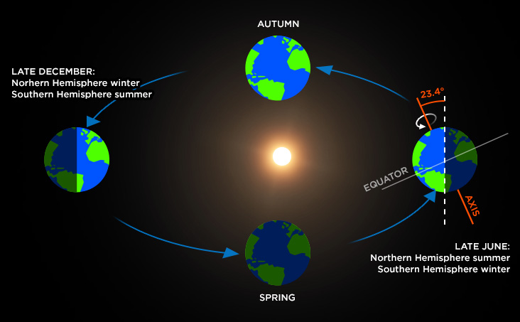

Seasons are a constant cycle of get more sunlight on average, and geting less sunlight on average.
Seasons are caused by Earth tilt, and Earth's revolution around the sun. Earth's axis is on a 23 degree tilt.
Earth revolves around the sun, so, when the north pole is facing more towards the sun, the northern hemisphere will get more sunlight than the southern hemisphere. Because of this, the northern hemisphere will be summer, and the southern hemisphere will get winter. If the south is facing more towards the sun, the southern hemisphere will get summer, while the northern hemisphere will get winter.
Summer in the northern hemisphere is caused by the north pole facing towards the sun. The day where the north pole faces towards the sun the most is June 21. It's the longest day in the northern hemisphere, and the shortest day in the southern hemisphere.
Autum and Spring in the northern hemisphere is caused by the Earth's axis being parrallel with the sun. The Equinoxes are the only days when the days are the same length in the northern hemisphere, and the southern hemisphere. The Equinoxes ar on March 21, and September 21.
Winter in the northern hamispher is caused by the the south pole facing towards the sun, and the north pole facing away from the sun. The day when the north pole faces away from the sun the most is December 21. December 21 is the shortest day of the year in the northern hemisphere, and the longest day of the year in the southern hemisphere